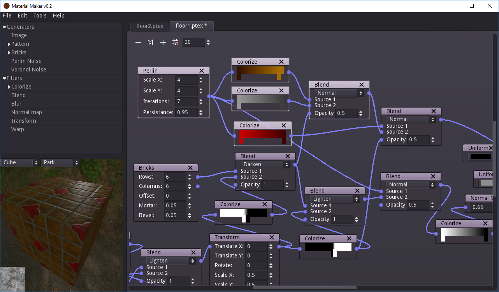

Introduction¶
Material Maker is a procedural material editor based on the Godot Engine.
It can be used to describe the textures that define a material by interconnecting basic nodes that generate, transform or combine seamless textures in a graph.
Generator nodes describe configurable patterns that can be used to create the basic shapes and textures of the material.
Transform nodes change the colors and shapes of their input images to create a more complex texture.
Combine nodes use several input images to generate a new one.
Many nodes in Material Maker are resolution independant, which makes it possible to use transforms to zoom on an image detail without affecting the generated texture quality. Only a few nodes such as the image generator and convolution filters (blur, emboss, normal map generation) will limit the resolution of their output.
